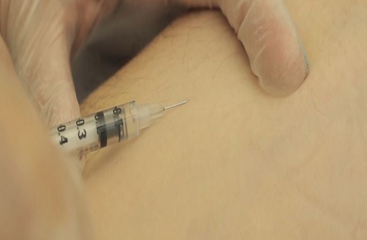
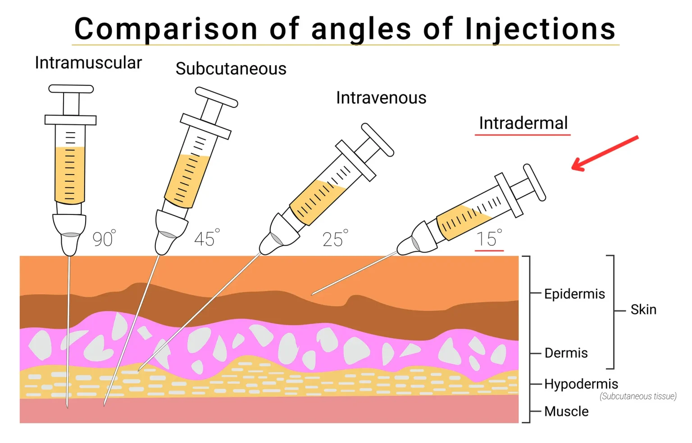

Una inyección intradérmica es un método que se utiliza para administrar un pequeño volumen de medicamento o sustancia directamente en la dermis , la capa de piel que se encuentra debajo de la superficie.

Conceptos básicos
Antebrazo interno (cara interna): Es el lugar más utilizado para las pruebas de tuberculosis y también para las pruebas de alergia.
Parte superior de la espalda: Un lugar preferido para las pruebas de alergia, el área de prueba puede abarcar toda la espalda dependiendo de la cantidad de alérgenos analizados y del tamaño de la espalda del cliente.
| Aspecto | Intradérmica |
|---|---|
| Profundidad de inyección | En la dermis |
| Ángulo de la aguja | De 5 a 15 grados |
| Tamaño de la aguja | Calibre 25 a 27, 1/4 a 1/2 pulgada |
| Usos comunes | Pruebas de diagnóstico, ciertas vacunas |

Técnica de aplicación
Las inyecciones intradérmicas (ID) se administran en la dermis, justo debajo de la epidermis. Esta vía de administración tiene el tiempo de absorción más prolongado de todas las vías parenterales. Este tipo de inyecciones se utiliza para pruebas de sensibilidad, como la de tuberculosis , alergias y anestesia local. La ventaja de estas pruebas es que la reacción del organismo es fácil de visualizar y se puede evaluar su grado. Los sitios más comunes son la superficie interna del antebrazo y la parte superior de la espalda, debajo de la escápula. Es importante elegir un sitio de inyección libre de lesiones, erupciones, lunares o cicatrices, ya que estos pueden alterar la observación de los resultados de la prueba.
Complicaciones y riesgos
Aplicaciones clínicas